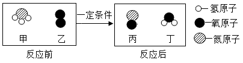

2018年北京市中考化学真题 · 选择题 第11、12题 · 对应解析
11. 下列关于①～⑤所得溶液的说法不正确的是（ ）
A. 溶质质量：①<②B. 溶液质量：②<④
C. 溶质质量分数：①=③D. ⑤中溶质与溶剂的质量比为9:10
【答案】10. C 11. D
【解析】
【10题详解】
根据20℃时，NaCl和NaNO3的溶解度分别为36g和88g可知，②、⑤中含有未溶解的NaCl和NaNO3，即所得溶液为饱和溶液。故选 C
【11题详解】
A、根据20℃时，NaCl和NaNO3的溶解度分别为36g和88g判断溶质质量：①中30g<36g，故①所得的溶液是不饱和溶液，故溶液中的溶质的质量为30g，②中加入60g的氯化钠，最多只能溶解36g的氯化钠，故溶液中的溶质的质量为36g，故溶质的质量①<②，正确；
B、②中最多溶解氯化钠的质量为36.0g，故所得溶液的质量为136g，④中60g的硝酸钠完全溶解，故所得溶液的质量为160g，故所得溶液质量②<④，正确；
C、①和③中30g的氯化钠和硝酸钠都完全溶解，故所得溶液的质量①=③，正确；
D、⑤中最多能溶解硝酸钠88g，故溶质与溶剂的质量比为88:100=22:25，故错误。故选D。
12. 氨催化氧化是制硝酸的主要反应之一。该反应前后分子种类变化的微观示意图如下。下列说法不正确的是

A. 甲中氮、氢原子个数比为1:3B. 乙 相对分子质量为32
相对分子质量为32
C. 两种生成物均为化合物D. 生成的丙与丁的分子个数比为1:2
【答案】D
【解析】
【分析】根据微观示意图判断化学方程式为4NH3+5O2 4NO+ 6H2O。
【详解】A、甲物质是NH3，其中氮、氢原子个数比为1:3，故A正确；
B、乙物质是O2，O2的相对分子质量为16×2=32，故B正确；
C、由图可知，两种生成物是NO和H2O，都是由两种元素组成，故均为化合物，故正确；
D、由方程式可知，生成的丙与丁的分子个数比为4:6=2:3，故错误。
故选D。
第二部分 非选择题（33分）
（生活现象）